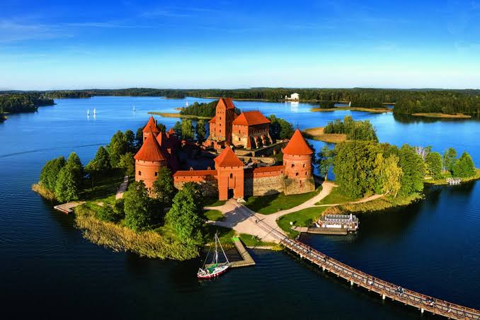
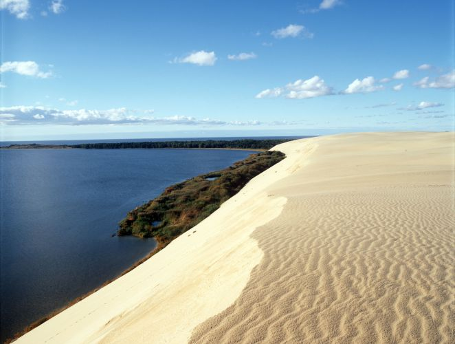
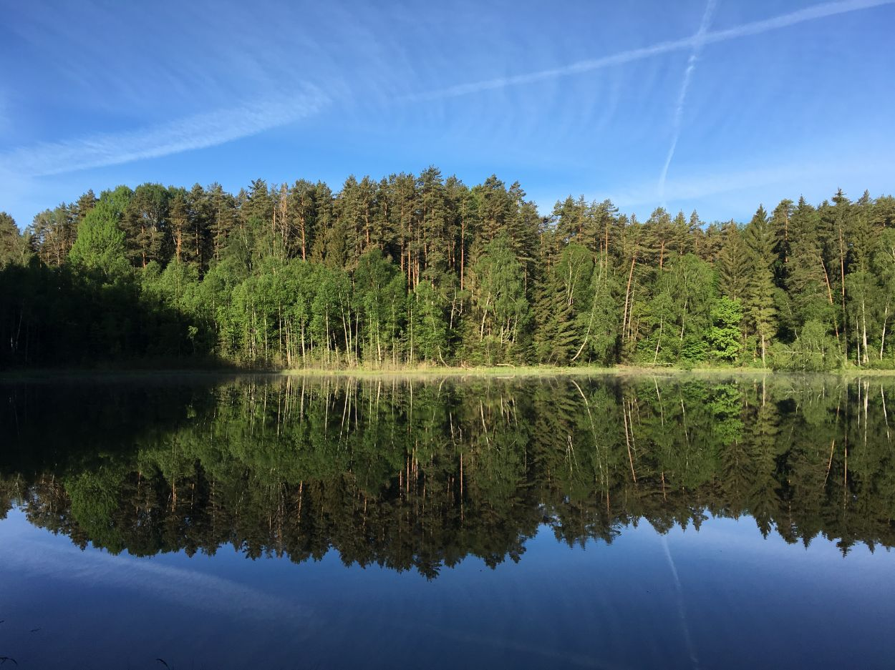
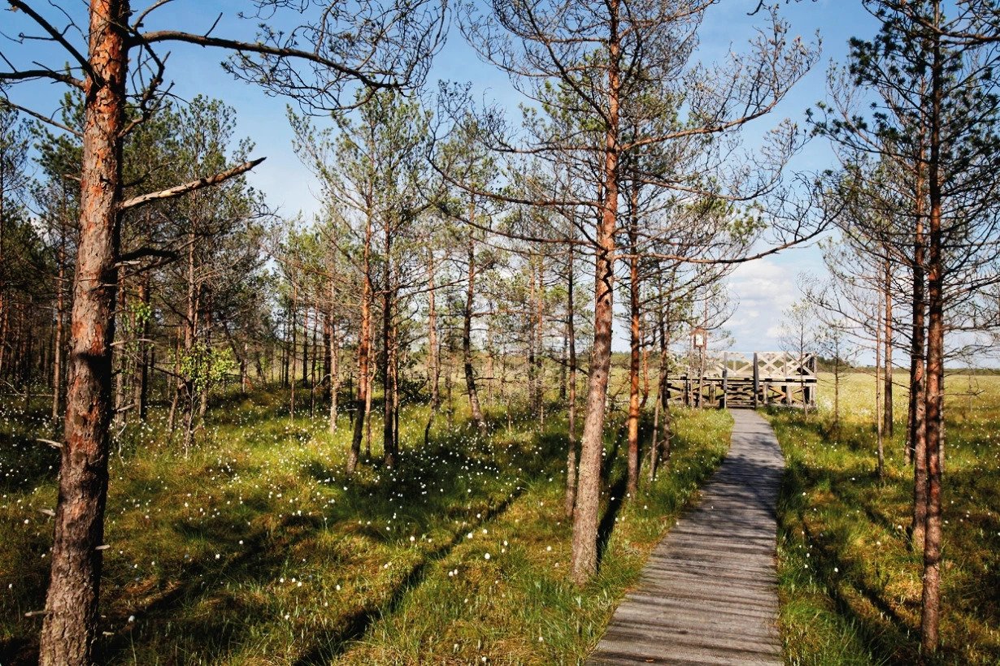
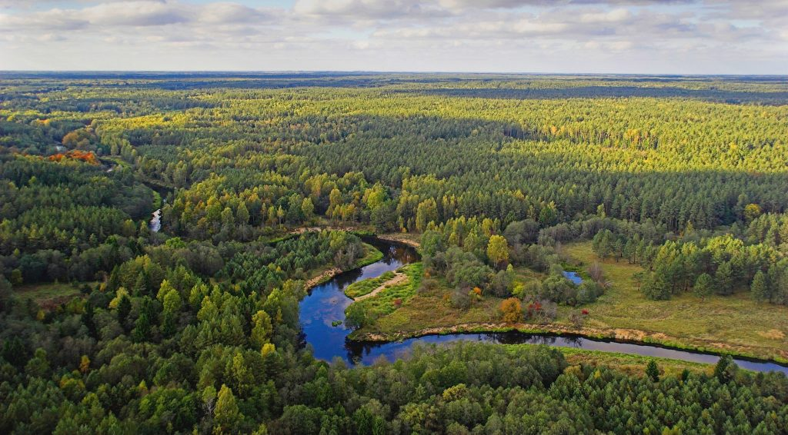
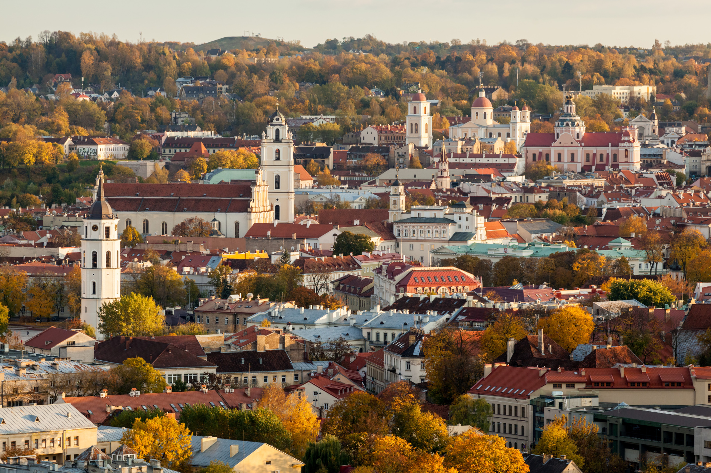

Trakų pilis
Istorija ir gamta
Atrask Lietuvą
Gamta · Kelionės · Įspūdžiai
Lietuvos grožis - nuo ežerų iki senamiesčių.

Istorija ir gamta

Vėjo ir smėlio ramybė

Ramybės oazė

Ramybės oazė

Miškų paslaptys

Kultūra ir atmosfera